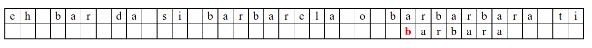
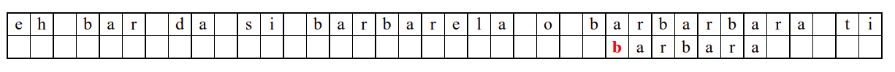

Претрага подниске¶
Претрага првог, последњег или свих појављивања дате подниске унутар шире ниске је један од основних задатака обраде текстуалног садржаја. Пошто се често претражује огромна количина текста, веома је значајно да алгоритми претраге подниске буду што је могуће ефикаснији. На пример, ако тражимо веб-странице које садрже неку реч, потребно је обрадити стотине милиона, па и милијарде веб-страница (наравно, то се не ради у тренутку постављања упита, већ претраживачи унапред праве и одржавају тзв. индексе који за сваку реч садрже листу веб-страница које садрже ту реч).
У наставку ћемо веома укратко описати три алгоритма за претрагу подниске (један сасвим елементаран, заснован на грубој сили и два ефикасна). Претпоставићемо да се у ширем тексту \(s\) дужине \(m\) карактера тражи подниска \(w\) дужине \(n\) (да би ниска садржала подниску мора да важи \(n \leq m\)). Претпоставимо да је потребно пронаћи позицију првог појављивања тј. најмању позицију \(p\) такву да је \(p + n \leq m\) и да је \(s_{p+i} = w_i\), за свако \(0 \leq i < n\).
Груба сила¶
Алгоритам претраге заснован на грубој сили је крајње елементаран. Посматрају се све могуће позиције почетка \(0 \leq p < m - n\) и за сваку позицију се врши поређење ниски. Илустрација рада овог алгоритма је приказана на следећој анимацији. Карактери који се поклапају приказана су зеленом бојом, а карактери који се не поклапају приказани су црвеном бојом. Када год дође до непоклапања, поређење са подниском креће од почетка, али кренувши од наредне позиције \(p\).


 


Пошто се испитује свака позиција (а број позиција је \(O(m)\)) и пошто се за сваку позицију у најгорем случају испитује \(O(n)\) карактера подниске, укупан број поређења је \(O(mn)\). Ипак, број поређења је често мањи од \(mn\). Као што видимо, када је текст релативно насумичан, за већину позиција \(p\) се веома брзо (најчешће већ на првом карактеру) проналази непоклапање. Ипак, у овом примеру се види да постоје позиције где се непоклапање проналази прилично касно тј. на којима је потребно испитивање скоро свих \(n\) карактера подниске пре него што се утврди да непоклапање постоји на неком од последњих карактера. Са друге стране, ако текст није насумичан, број поређења може да се приближи броју \(mn\). Погледајмо следећи пример.
На свакој позицији се врши \(n\) поређења (тек на последњем карактеру се открива непоклапање). Стога је потребно развити ефикасније алгоритме код којих ће број поређења гарантовано бити линеаран у односу на дужине ниске и подниске.
Кнут-Морис-Прат-ов алгоритам (КМП)¶
Алгоритам KMP побољшава ефикасност претраге тако што користи чињеницу
да је приликом проналажења првог непоклапања на некој позицији већ
испитан одређен број карактера ниске и подниске и установљено је да су
они једнаки. На пример, ако тражимо ниску abcde унутар неке шире
ниске и кренувши од неке позиције \(p\) наиђемо на карактере
abcdf, тада знамо да не морамо да испитујемо позиције \(p+1\),
\(p+2\) нити \(p+2\) јер смо већ видели да оне не садрже
карактер a којим почиње тражена подниска, па она не може
започињати ни на једној од тих позиција (прво непоклапање је било
између слова e и f, што значи да су се претходна слова
поклапала, а ми знамо да ниска \(w\) не садржи слово a након
своје прве позиције). Погледамо у наредном примеру како алгоритам КМП
користи информације овог типа да би прескочио велики број поређења.

Занемаримо на почетку табелу приказану при врху анимације и обратимо пажњу само на поређење карактера две ниске.
На почетку алгоритам покушава једну по једну позицију, одмах наилази на непоклапање и прелази на следећу позицију, па ту нема разлике у односу на оно како функционише алгоритам грубе силе.
Када претрага крене од позиције 3, почетна слова
barсе поклапају и непоклапање се налази када се пореде словоbи размак у тексту. Знајући садржај ниске коју тражимо, можемо одмах да закључимо (без експлицитног испробавања) да се на три наредне позиције након текуће не налази словоb(пошто су на тим позицијама била успешна поклапања унапред знамо да на њима пишеar␣) па доњу ниску можемо одмах померити 4 позиције надесно.Након тога се ниска помера за по једну позицију надесно (јер се прво слово не поклапа) и алгоритам се понаша исто као претрага грубом силом.
Наредни интересантан случај наступа када се установи да се након поклапања слова
barbarсловаaу траженој подниски и словоeу тексту не поклапају. У досадашњим примерима смо ниску померали иза позиције непоклапања. Аргумент због ког смо то смели да урадимо је да се прво слово ниске коју тражимо не јавља ни једном у делу ниске који се поклопио. У овом случају, међутим, не само да се почетно словоbјавља још једном, него се три почетна словаbarјављају и на крају нискеbarbarза коју знамо да нам се тренутно јавила. Непоклапање нам говори да се изаbarbarне налази жељеноa, међутим, ако би се налазилоb, постојала би шанса да реч почиње три позиције десно од текуће (на месту на ком се јавља другоbarу речиbarbar). Стога померамо подниску на ту позицију у нади да ћемо изаbarпронаћиb. То се, међутим, не дешава (на тој позицији се уместоbналазиe). У том тренутку знамо да се на три позиције иза текуће не налази ни једноb(налазе се карактериbare), па можемо подниску померити на позицију иза појављивања словаe.У наставку опет улазимо у фазу у којој нема поклапања и у којој се у сваком кораку подниска помера за једну позицију надесно.
Наредни интересантан случај је када се установи да се након поклапања слова
barbarсловаaу траженој подниски и словоbу тексту не поклапају. Слично као мало пре, подниску померамо за три позиције удесно на позицију на којој знамо да се налази текстbarкоји се, већ знамо, поклапа са прва три слова тражене ниске. Анализирајући четврти карактер, овај пут установљамо да се ту заиста налази словоb, па се поређење може наставити. Испоставља се да смо пронашли тражену позицију, па свако поређење слова до краја подниске довести до поклапања.
Дакле, КМП алгоритам користи чињеницу да се неком врстом анализе подниске која се тражи и која се може обавити унапред може приликом сваког непоклапања установити за колико се позиција може померити подниска пре новог поређења карактера. Табела која је приказана на врху анимације нам тачно то говори. Ове бројеве треба тумачити на следећи начин: након непоклапања почетак подниске треба померити тако да њен први карактер дође на текућу позицију (позицију на којој је наступило непоклапање) и затим је треба померити за још онолико позиција улево колико то бројеви у табели говоре (ако пише -1, подниска треба да се помери за једну позицију удесно, ако пише 0, подниска не треба даље да се помера, а ако пише неки позитиван број, подниска треба да се помери за толико позиција улево). Погледајмо пример из претходне анимације:
b a r b a r a
-1 0 0 -1 0 0 3
Ако се већ прво
bне поклопи, подниска се помера за једно место удесно (подсетимо се, вредност -1 у таблици означава да од позиције непоклапања подниску померамо једно место удесно).
....?...... -> ....?......
b... b...
Ако се
bпоклопи, али сеaне поклопи, тада подниску померамо тако да јој почетно словоbдође на позицију на којој је карактер који се није поклопио саa(на тој позицији може бити карактерb, што ће се следећим поређењем испитати). Подсетимо се, вредност 0 у таблици означава да подниску треба померити тачно до позиције непоклапања. И овим се подниска заправо помера за једну позицију удесно.
....b?.... -> ....b?....
ba.. ba....
Ако се слова
baпоклопе, али сеrне поклопи тада подниску померамо тако да јој почетно словоbдође на позицију на којој је карактер који се није поклопио саr(на тој позицији може бити карактерb, што ће се следећим поређењем испитати). Подсетимо се, вредност 0 у таблици означава да подниску треба померити тачно до позиције непоклапања. Овим смо прескочили једну позицију, али знамо да се на њој налазиa, а неb, па је то у реду (подниска сигурно не може почињати на тој позицији).
....ba?...... -> ....ba?.......
bar.. ba....
Ако се слова
barпоклопе, али се наредноbне поклопи тада подниску померамо тако да јој почетно словоbдође на једну позицију десно од позиције на којој је карактер који се није поклопио саb(то означава вредност -1 у таблици). Овим смо прескочили три позиције, али знамо да се на њима налазеa,rи неки карактер за који је управо установљено да је различит одb, па је то у реду (подниска која почиње карактеромbсигурно не може почињати на позицијама на којима знамо да се не налазиb).
....bar?.... -> ....bar?.........
barb.. barb...
Ако се слова
barbпоклопе, али сеaне поклопи тада подниску померамо тако да јој почетно словоbдође на позицију на којој је карактер који се није поклопио саa(на тој позицији може бити карактерb, што ће се следећим поређењем испитати). Ово је одређено вредношћу 0 у таблици. Овим смо прескочили позиције на којима знамо да се налазеaиr, па је то у реду. Прескочили смо и позицију на којој се налази карактерb, што је у реду, јер смо управо утврдили да се иза ње не налазиa, па тим словомbне може почињати појављивање подниске.
....barb?...... -> ....barb?.........
barba.. barba..
Ако се слова
barbaпоклопе, али сеrне поклопи тада подниску померамо тако да јој почетно словоbдође на позицију на којој је карактер који се није поклопио саr(на тој позицији може бити карактерb, што ће се следећим поређењем испитати). Подсетимо се, број 0 у таблици сугерише да се подниска помера тачно до позиције непоклапања. Овим смо прескочили позиције на којима знамо да се налазеa,rи још једноa, па је то у реду. Прескочили смо и позицију на којој се налази карактерb, што је у реду, јер смо управо утврдили да иако се иза ње налази карактерa, иза њега се не налазиr, па тим словомbне може почињати појављивање подниске.
....barba?.... -> ....barba?.........
barbar.. barbar..
Ако се
barbarпоклопе, али сеaне поклопи тада подниску померамо тако да јој почетно словоbдође на позицију на којој се налази другоb. Наиме, вредност 3 у таблици нам говори да подниску треба померити 3 позиције лево од позиције непоклапања. Овим смо прескочили позиције на којима знамо да се налазеaиr, па је то у реду. Карактер који се није поклопио саaможе бити карактерb, што морамо проверити, па већа померања удесно нису могућа.
....barbar?.... -> ....barbar?.........
barbara.. barbara...
Дакле, када је неком анализом подниске која се тражи изграђена оваква
таблица, спровођење алгоритма је прилично једноставно. Међутим,
поставља се питање како се ова таблица ефикасно формира. Приликом
одређивања колико је потребно померити подниску након утврђеног
непоклапања, потребно је одредити најдужи суфикс дела ниске на ком је
утврђено поклапање који је уједно и префикс тог дела ниске. На пример,
ако се поклапа barbar, најдужи суфикс који је уједно префикс има 3
карактера, што указује на то да се померање врши на следећи начин.
barbar
barbar
ако би део који се поклопио био abcdabcdabc, тада би тај суфикс
био abcdabc, а померање би се извршило на следећи начин.
abcdabcdabc
abcdabcdabc
Дакле, поред алгоритма претраге који смо описали, важну компоненту КМП алгоритма чини веома ефикасан поступак изградње таблице померања заснован на одређивању оваквих најдужих суфикса који су уједно и префикси. Тај поступак је заснован на техници динамичког програмирања и може се извршити у сложености \(O(n)\). Заинтересоване читаоце позивамо да пробају да самостално осмисле овај поступак и да своје решење испробају у задатку Префикс суфикс из онлајн Збирке. Пробајте на основу тога да направите комплетну имплементацију овог алгоритма (његов код је релативно кратак и елементаран, али слобдно можемо рећи да алгоритам није баш једноставан за разумевање).
Анимације које смо видели су направљене помоћу веб-апликације доступне на адреси http://www.matf.bg.ac.rs/~filip/algoritmi/kmp.html Употребите слободно ову апликацију да бисте и на неким другим примерима видели како се гради таблица померања и како функционише поступак претраге.
Рабин-Карпов алгоритам (хеширање ниски)¶
Основу овог алгоритма чини техника хеширања. Идеја је да се свакој ниски применом неке хеш-функције \(h\) додели неки неозначени број (обично релативно велики, 32-битни или 64-битни). Тада се за поређење једнакости две ниске може употребити поређење једнакости два броја, које је много брже од поређења појединачних карактера. Наиме, поређење ниски дужине \(n\) поређењем појединачних карактера је операција сложености \(O(n)\), док је поређење бројева операција сложености \(O(1)\). Две исте ниске се, наравно, функцијом \(h\) сликају у исти број, међутим, пошто је ниски више него бројева (нпр. 32-битних), јасно је да ће се више различитих ниски сликати у исти број. Дакле, хеш функција најчешће није 1-1. Зато различитост два броја (хеш-вредности) гарантује да су ниске различите, а једнакост бројева је веома јак индикатор, али не и гаранција да су ниске једнаке (па једнакост треба проверити поређењем карактера).
Рабин-Карпов алгоритам се онда може изразити наредним псеудокодом.
neka je hw = h(w) hes vrednost trazene podniske w
za savaku poziciju p od 0 do |s|-|w|:
neka je hs = h(s[p..p+|w|-1]) hes vrednost dela teksta s
koji pocinje na poziciji p i duzine je kao niska |w|
ako je hs = hp:
ako su karakteri niski s[p..p+|w|-1] i w jednaki:
vrati da je podniska je pronadjena na poziciji p
vrati da podniska nije pronadjena
Вероватноћа да различите ниске имају исте хеш-вредности је обично јако мала, тако да ће се приликом претраге подниске, обично редом добијати различите хеш-вредности све док се не пронађе појавиљивање подниске и тада ће се добити исти бројеви и само тада ће се поредити карактери (да бисмо били потпуно сигурни да смо заиста нашли подниску).
Рачунање хеш-вредности ниске подразумева анализу свих њених карактера,
па је сложеност те операције обично линеарна у односу на број
карактера ниске. Рачунање хеш-вредности подниске која се тражи врши
се само једном, пре почетка претраге. Међутим, током извршавања
Рабин-Карповог алгоритма, у најгорем случају је потребно израчунати
хеш-вредности свих подниски дужине \(n = |w|\) ниске \(s\) (за
сваку позицију анализира се нова подниска). Ако се то ради за сваку
подниску изнова, сложеност алгоритма била би веома лоша (за сваку од
\(O(m)\) позиција рачунали бисмо хеш-вредност подниске дужине
\(n\) која на тој позицији почиње и то би се радило у сложености
\(O(n)\), па би укупна сложеност била \(O(mn)\), што желимо да
избегнемо). Решење је да хеш-вредности рачунамо инкрементално. Наиме,
две суседне подниске дужине \(n\) унутар ниске \(s\) деле
велики број карактера и разликују се само на почетку и на крају. На
пример, ако је текст abcdefg његове подниске дужине 4 су:
abcd
bcde
cdef
defg
Свака наредна подниска се добија избацивањем почетног карактера
претходне и додавањем новог карактера на њен крај. Хеш-функције се
дизајнирају тако да омогућавају лако ажурирање приликом измене ниске
помоћу ове две операције (такве хеш-функције се зову котрљајући
хеш, енгл. rolling hash). На пример, хеш вредност се може добити
тако што се сваки карактер тумачи као цифра у некој великој бројевној
основи \(B\) и хеш вредност се онда тумачи као вредност броја у
тој основи. На пример, ако се користи ASCII таблица, тада основа система
може да буде 128, а цифре које одговарају карактерима су одређене њиховом
ASCII кодовима. Да не би дошло до прекорачења, вредност броја се
рачуна по неком модулу \(M\). Ако се одабере таква хеш-функција
\(h\), Хеш-вредност ниске abcd била би
У општем случају, рачунамо вредност
Ово се ефикасно може израчунати Хорнеровом схемом
где су са \(+_M\) и \(\cdot_M\) означене операције сабирања и множења по модулу \(M\). Ажурирање хеш-вредности се тада може вршити у константној сложености. Прво се од тренутне хеш вредности одузме вредност \((a_{n-1} \cdot B^{n-1})\ \mathrm{mod}\ M\), затим се добијена вредност помножи са \(B\) по модулу \(M\) и на крају јој се дода ASCII код новог карактера. При том, вредност \((B^{n-1})\ \mathrm{mod}\ M\) израчунавамо само једном, на почетку рада алгоритма.
Покушај да на основу овог описа алгоритма направиш његову имплементацију (то не би требало да буде тешко).
Поред алгоритама КМП и хеширања ниски, у пракси се користи и трећи веома ефикасан алгоритам претраге подниске - Бојер-Муров алгоритам. Покушајте да пронађете његов опис на интернету. Он је компликованији од два алгоритма приказана у овом тексту, али у се пракси показује као најефикаснији.